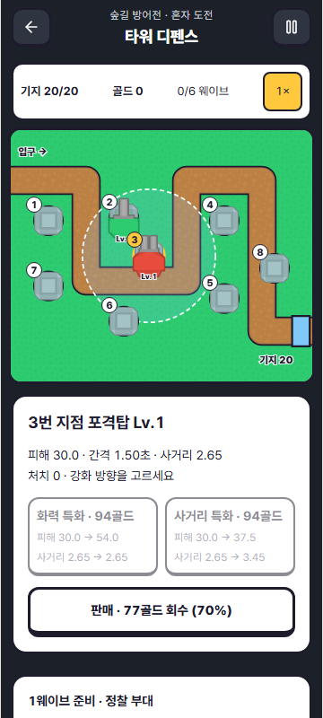
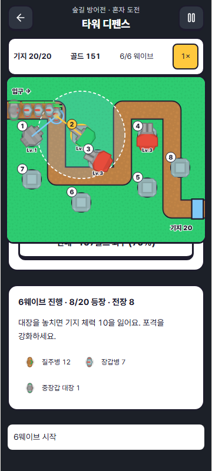
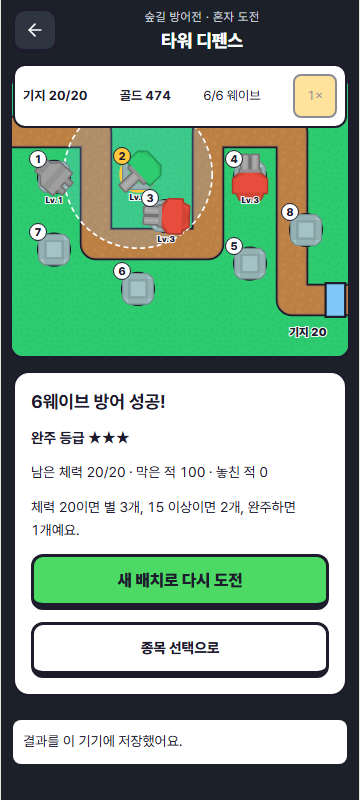

TRAINORACLE · 2026.10.16
경로를 막고,
배치로 이기는 디펜스
실제 게임 4종의 공식 스크린샷 12장을 확보해 검토했습니다. 건설 → 자동 공격 → 수입 → 강화 → 다음 웨이브의 흐름으로 새 방어전을 만들었습니다.
새 게임 열기더보기 → 미니게임 → 혼자 도전 → 타워 디펜스
직접 구현한 화면

건설 · 사거리 · 강화 선택
자동 공격 · 감속 · 장갑 적
기지 체력 · 처치와 누락 · 완주 등급- 번호가 있는 건설 지점을 누르고 타워를 고릅니다.
- 준비가 끝나면 웨이브 시작. 전투 중에도 건설·강화·판매할 수 있습니다.
- 연사로 빠른 적, 포격으로 장갑과 무리, 냉각으로 이동을 늦춥니다.
- 기지 체력 20을 지키며 6웨이브를 완수합니다. 0이면 패배합니다.
- 준비 단계의 일시정지 메뉴에서 저장하고 나갈 수 있습니다.
지정 건설 지점과 경로 방어
Kingdom Rush - Tower Defense
공식 상품 · 사용 소개 · 스크린샷 출처 ↗플레이 흐름 길목의 타워를 건설하고 적 처치 자원으로 강화·특화해 생명을 지키는 흐름. 원작 공식 전략 가이드는 레벨별 공략을 제공한다.
화면 관찰 1번은 캠페인 지도, 2·3번은 전투 화면. 고정 건설 지점, 굽은 길과 생명·돈·웨이브 HUD를 확인했다.
 공식 화면 1 · 원본 열기
공식 화면 1 · 원본 열기 공식 화면 2 · 원본 열기
공식 화면 2 · 원본 열기 공식 화면 3 · 원본 열기
공식 화면 3 · 원본 열기구현에 적용 고정 경로와 8개 건설 지점, 기지 체력, 웨이브 정비. 러너 조작은 포함하지 않았다.
타워 구매와 강화 선택
Bloons TD 6
공식 상품 · 사용 소개 · 스크린샷 출처 ↗플레이 흐름 경로 주변에 타워를 놓고 라운드를 진행하며 돈으로 추가 건설하거나 업그레이드 경로를 선택한다. 공식 소개에는 타워별 3개 업그레이드 경로가 설명돼 있다.
화면 관찰 3장 모두 전투 화면. 우측 타워 목록과 가격, 상단 돈·생명·라운드, 진행·속도 조작을 확인했다.
 공식 화면 1 · 원본 열기
공식 화면 1 · 원본 열기 공식 화면 2 · 원본 열기
공식 화면 2 · 원본 열기 공식 화면 3 · 원본 열기
공식 화면 3 · 원본 열기구현에 적용 가격과 잔액이 보이는 구매, 부족 시 비활성화, 명시적인 시작과 1×/2× 전투 속도.
선택 타워의 사거리와 수치
Infinitode 2 - Infinite Tower Defense
공식 상품 · 사용 소개 · 스크린샷 출처 ↗플레이 흐름 적의 특성에 맞는 타워를 배치하고 성장·강화 수치를 확인하며 기지를 지킨다.
화면 관찰 3번의 Splash 선택 화면에 사거리 원, 정보, 업그레이드 비용과 판매 버튼이 보인다.
 공식 화면 1 · 원본 열기
공식 화면 1 · 원본 열기 공식 화면 2 · 원본 열기
공식 화면 2 · 원본 열기 공식 화면 3 · 원본 열기
공식 화면 3 · 원본 열기구현에 적용 공격 판정과 같은 사거리 원, 강화 전후 수치, 투자액의 70% 판매 회수.
감속과 화력의 조합
Element TD 2 - Tower Defense
공식 상품 · 사용 소개 · 스크린샷 출처 ↗플레이 흐름 원소와 타워 조합을 선택하고 상성·업그레이드 계획으로 웨이브에 대응한다. 공식 소개는 6원소 조합을 설명한다.
화면 관찰 초원·용암·설원 전투 화면. HUD가 숨겨져 있어 메뉴 조작 증거로 쓰지 않았다.
 공식 화면 1 · 원본 열기
공식 화면 1 · 원본 열기 공식 화면 2 · 원본 열기
공식 화면 2 · 원본 열기 공식 화면 3 · 원본 열기
공식 화면 3 · 원본 열기구현에 적용 감속 구간과 포격 범위를 겹치는 배치, 단일 연사와 장갑 관통 포격의 차이. 6원소 트리를 복제하지 않았다.
검수 범위
무설치 시 패배, 위치별 방어 결과 차이, 획득 골드만 사용하는 혼합 타워 조합의 6웨이브 완주를 확인합니다. 모바일 구매·정지·저장 후 이어하기·결과 저장을 별도로 검수합니다.
상용 게임의 화면은 출처가 있는 참고 자료이며 게임 에셋으로 사용하지 않습니다. 화면 관찰과 공식 사용 소개를 바탕으로 했으며, 원작 직접 플레이나 인기 순위 검증을 주장하지 않습니다. 장기 재미와 재방문은 플레이 테스트가 더 필요합니다.
구현·검수 PR · 12장 출처와 원본 해시